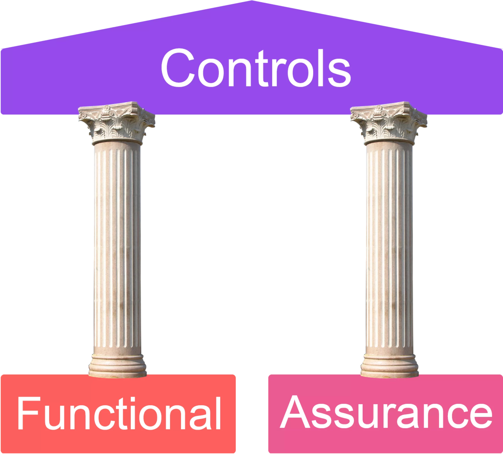
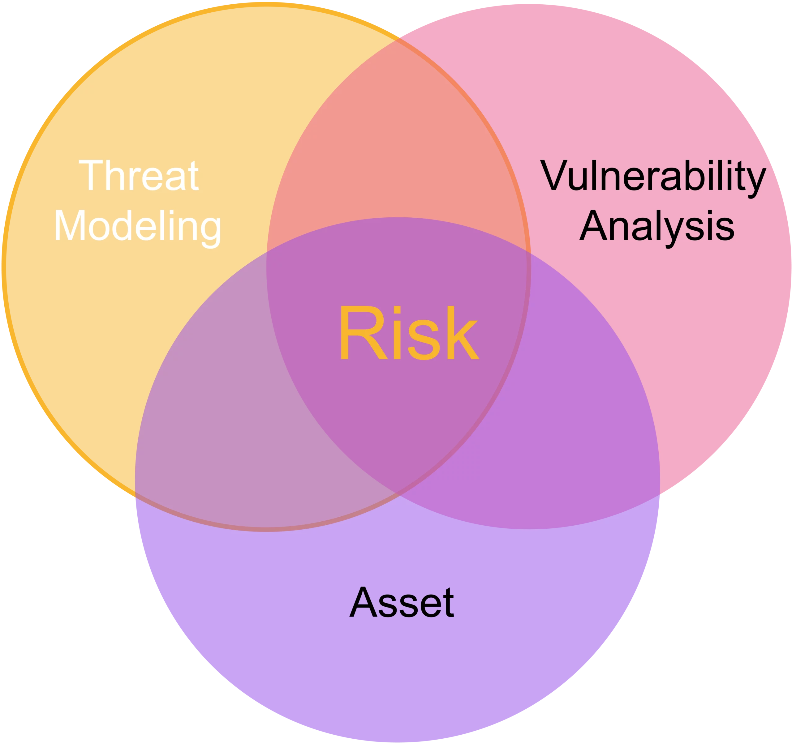

Domain 1 Security and Risk Managment 16%
1.1 Understand, adhere to, and promote professional ethics (2-4 items)
Chapter 19
ISC2 Code of Professional Ethics
It's a simple code with a preamble and four canons.
Code of Ethics Preamble - The safety and welfare of society and the common good, duty to our principlas, and to each other requires that we adhere, and be seen to adhere, to the highest ethical standards of behavior. - Therefore, strict adherence to this Code is a condition of certification.
Code of Ethics Canons
-
Protect society, the common good, necessary public trust and confidence, and the infrastructure.
-
Act honorably, honestly, justly, responsibly, and legally.
-
Provide diligent and competent service to principals.
-
Advance and protect the profession.
Organizational code of ethics
Almost every organization has its own code of ethics that is published to employees to help guide their everyday work. These may come in the form of an official ethics statement, or they may be embodied in the policies and procedures that the organization uses to carry out routine business activities.
1.2 Understand and apply security concepts
Chapter 1
- Confidentiality, integrity, and availability, authenticity, and nonrepudiation (5 Pillars of Information Security)
1.3 Evaluate, apply, and sustain security governance principles
Chapter 1
Alignment of the security function to business strategy, goals, mission, and objectives
Security management planning aligns the security functions to the strategy, goals, mission, and objectives of the organization. This includes designing and implementing security based on business cases, budget restrictions, or scarcity of resources.
Organizational processes (e.g., acquisitions, divestitures, governance committees)
Acquisitions and mergers place an organization at an increased level of risk, including inappropriate information disclosure, data loss, downtime, or failure to achieve sufficient return on investment (ROI). In addition to all the typical business and financial aspects of mergers and acquisitions, a healthy does of security oversight and increased scrutiny is often essential to reduce the likelihood of looses during such a period of transformation.
security-mindedness
Organizational roles and responsibilities
Senior manager: The organizational owner (senior manager) role is assigned to the person who is ultimately responsible for the security maintained by an organization and who should be most concerned about the protection of its assets. It is the person who authorize and support a security policy.
Security professional: The security professional, information security (InfoSec) officer, or computer incident response team (CIRT) role is assigned to a trained and experienced network, systems, and security engineer who is responsible for following the directives mandated by senior management. The security professional has the functional responsibility for security, including writing the security policy and implementing it.
Asset Owner: The person who is responsible for classifying information for placement and protection within the security solution. The asset owner is typically a high-level manager who is ultimately responsible for asset protection. However, the asset owner usually delegates the responsibility of the actual data management tasks to a custodian.
Custodian: The custodian role is assigned to the user who is responsible for the tasks of implementing the prescribed protection defined by the security policy and senior management. The custodian performs all activities necessary to provide adequate protection for the CIA Triad of data and to fulfill the requirements and responsibilities delegated from upper management. These activities can include performing and testing backups, validating data integrity, deploying security solutions, and managing data storage based on classification.
User: The user (end user or operator) role is assigned to any person who has access to the secured system.
Auditor: An auditor is responsible for reviewing and verifying that the security policy is properly implemented and the derived security solutions are adequate.
Security control frameworks
(e.g., International Organization for Standardization (ISO), National Institute of Standards and Technology (NIST), Control Objectives for Information and Related Technology (COBIT), Sherwood Applied Business Security Architecture (SABSA), Payment Card Industry (PCI), Federal Risk and Authorization Management Program (FedRAMP))
One of the first and the most important security planning steps is to consider the overall security control framework or structure of the security solution desired by the organization.
Due care/due diligence
Due diligence is establishing a plan, policy, and process to protect the interests of an organization.
Due care is practicing the individual activities that maintain the due diligence effort.
1.4 Understand legal, regulatory, and compliance issues that pertain to information security in a holistic context
Chapter 4
Cybercrimes and data breaches
Cybercrimes (aka computer crimes) are the term broadly applied when a computer is used in the act of committing a crime. They are often divided into two categories: - Computer as the target of a crime - Computer as a tool (weapon) used to commit a crime.
Licensing and Intellectual Property requirements
Licensing
Four common types of (software) license agreements are in use today:
-
Contractual license agreements use a written contract between the software vendor and the customer, outlining the responsiblities of each. These agreements are commonly found for high-priced and/or highly specialized software packages.
-
Shrink-wrap license agreements are written on the outside of the software packaging. They commonly include a clause stating that you acknowledge agreement to the terms of the contract simply by breaking the shrink-wrap seal on the package.
-
Click-through (aka browser wrap) license agreements are place contract terms written on the software box or include contract terms in the software documentation.
-
Cloud services license agreements take click-through agreements to the extreme. Most cloud services do not require any form of written agreement and simply flash legal terms on the screen for review. Most users, in their excitement to access a new service, simply click their way through the agreement without reading it and may unwittingly bind their entire organization to onerous terms and conditions.
Intellectual Property (IP)
IP is collectively referred by many intangible assets. For example, publishing companies, movie producers, and artists depend on their creative output to earn their livelihood. Many products depend on secret recipes or production techniques.
Import/export controls
Two sets of federal regulations governing imports and exports are of particular interest to cybersecurity professionals:
-
The International Traffic in Arms Regulations (ITAR) controls the export of items that are specifically designated as military and defense items, including technical information related to those items. The items covered under ITAR appear on a list called the United States Munitions List (USML), maintained in 22 CFR 121.
-
The Export Administration Regulations (EAR) cover a broader set of items that are designed for commercial use but may have military applications. Items covered by EAR appear on the Commerce Control List (CCL) maintained by the U.S. Department of Commerce. Notably, EAR includes an entire category covering information security products.
Transborder data flow
Transborder data flow laws restrict the transfer of data across country borders. When sharing data across borders, applicable laws must be considered.
These laws primarily relate to personal data. The idea is to protect a country/state/province/region's citizens' personal data. If an organization is collecting citizens' data, then they are accountable for the protection of that data.
Given these laws, organizations must consider the potential implications of the flow of data across physical borders. This can be very challenging for organizations to keep track of with the proliferation of service providers and global cloud services.
Issues related to privacy
(e.g., General Data Protection Regulation (GDPR), California Consumer Privacy Act, Personal Information Protection Law, Protection of Personal Information Act)
-
General Data Protection Regulation (GDPR), the main purpose of this law is to provide a single, harmonized law that covers data throughout the European Union, bolstering the personal privacy protections originally provided by the DPD (European Union Data Protection Directive).
The key provisions of the GDPR include the following: Lawfulness, fairness, and transparency; purpose limitation; data minimization; accuracy; storage limitation; security; accountability.
-
California Consumer Privacy Act provides consumers with the following:
The right to know what information businesses are collecting about them and how the organization uses and shares that information
The right to be forgotten, allowing consumers to request that the organization delete their personal information, in some circumstances
The right to opt out of the sale of their personal information
The right to exercise their privacy rights without fear of discrimination or retaliation for their use.
-
Personal Information Protection Law
Personal Information Protection and Electronic Documents Act (PIPEDA) is a national-level law in Canada, which restricts how commercial businesses may collect, use, and disclose personal information.
-
Protection of Personal Information Act
Personal data
Depending on the location in the world, personal data may be referred to in different ways, and what constitutes personal data can vary significantly.
Personal data can be referred to as:
PI: Personal Information
PII: Personally Identifiable Information
SPI: Sensitive Personal Information
PHI: Personal Health Information
PCI: Personal Cardholder Information

Contractual, legal, industry standards, and regulatory requirements
1.5 Understand requirements for investigation types
(i.e., administrative, criminal, civil, regulatory, industry standards) Chapter 19
Administrative investigations are internal investigations that examine either operational issues or a violation of the organization's policies.
Criminal investigations are typically conducted by law enforcement personnel, investigate the alleged violation of criminal law.
Civil investigations typically do not involve law enforcement but rather involve internal employees and outside consultants working on behalf of a legal team.
Regulatory investigations are conducted by governmment agencies when they believe that an individual or corporation has violated administrative law.
Industry standards: Some regulatory investigations may not involve government agencies. These are based on industry standards, such as the Payment Card Industry Data Security Standard (PCI DSS). These industry standards are not laws but are contractual obligations entered into by the participating organizations.
1.6 Develop, document, and implement security policy, standards, procedures, and guidelines
Chapter 1
Security policies are compulsory.
Once the main security policies are set, then the remaining security documentation can be crafted under the guidance of those policies. Standards define compulsory requirements for the homogenous use of hardware, software, technology, and security controls.
A guideline offers recommendations on how standards and baselines are implemented and serves as an operational guide for both security professionals and users.
Procedures are the final element of the formalized security policy structure. A procedure or standard operating procedure (SOP) is a detailed, step-by-step how-to document that describes the exact actions necessary to implement a specific security mechanism, control, or solution.
1.7 Identify, analyze, assess, prioritize, and implement Business Continuity (BC) requirements
Chapter 3
The Business Continuity Planning (BCP) process has four main steps:
-
Project scope and planning, including organizational review, BCP team selection, resource requirements, legal and regulatory requirements.
-
Business impact analysis, including identifying priorities, risk identification, likelihood assessment, impact analysis, resource prioritization.
-
Continuity planning
-
Approval and implementation
Business impact analysis (BIA)
Two different types of analysis: - quantitative impact assessment - qualitative impact assessment
Impact analysis:
Single loss expectancy (SLE) = Asset value (AV) * Exposure factor (EF)
Annualized loss expectancy (ALE) = SLE * Annualized rate of occurrence (ARO)
External dependencies
1.8 Contribute to and enforce personnel security policies and procedures
Chapter 2
Candidate screening and hiring
New personnel represents a risk to security; every organization needs personnel security policies that address and mitigate this risk with the right security controls.
Employment agreements and policy driven requirements
As part of bringing a new employee into an organization—also referred to as onboarding—company security policies, acceptable use policies, and similar agreements should be reviewed and agreed upon prior to giving a new employee their badge and any system credentials.
Prior to an employee leaving, or in conjunction with it, user system access should be disabled, and the fact that the employee's employment is being terminated should be conveyed to all relevant parties within the organization.
Onboarding, transfers, and termination processes
Vendor, consultant, and contractor agreements and controls
1.9 Understand and apply risk management concepts
Chapter 2
- Threat and vulnerability identification
- Risk analysis, assessment, and scope
- Risk response and treatment (e.g., cybersecurity insurance)
- Applicable types of controls (e.g., preventive, detection, corrective)
- Control assessments (e.g., security and privacy)
- Continuous monitoring and measurement
- Reporting (e.g., internal, external)
- Continuous improvement (e.g., risk maturity modeling)
- Risk frameworks (e.g., International Organization for Standardization (ISO), National Institute of Standards and Technology (NIST), Control Objectives for Information and Related Technology (COBIT), Sherwood Applied Business Security Architecture (SABSA), Payment Card Industry (PCI))
Categories of controls
A way to categorize the security controls is as safeguards or as countermeasures.
Safeguards are proactive controls; they are put in place before the risk has occurred to deter or prevent it from manifesting.
Countermeasures are reactive controls. They are put in place after risk has occurred and aim to allow us to detect and respond to it accordingly.
Controls can be further classified into three main categories:
- Administrative
- Logical/Technical
- Physical
Functional and assurance
A good security control should always include two aspects: the functional aspect and the assurance aspect.
-
Functional: Control performs the function it was designed to address/does what it is meant to do—for example, a firewall filtering traffic between different subnets.
-
Assurance: Control can be proven to be functioning properly on an ongoing basis, usually proven through testing, assessments, logging, monitoring, etc.

1.10 Understand and apply threat modeling concepts and methodologies
Chapter 1
Threat modeling is used to systematically identify, enumerate, and prioritize threats related to an asset.

Three major threat modeling methodologies you need to know about for the exam are STRIDE, PASTA, and DREAD.
STRIDE is a threat-focused methodology that's less strategic and thorough than PASTA. It is an acronym of:
Spoofing
Tampering
Repudiation
Information disclosure
Denial-of-service
Elevation of privilege
PASTA
Process for Attack Simulation and Threat Analysis (PASTA), contrary to STRIDE, is an attacker-focused, risk-centric methodology. It is much more detailed than STRIDE and performs threat analysis from a strategic perspective.
The stages in PASTA are as follows:
Define objectives
Define technical scope
Application decomposition
Threat analysis
Vulnerability and weakness analysis
Attack modeling
Risk and impact analysis
DREAD
DREAD is a threat model primarily used to measure and rank the severity of threats. DREAD is often used in combination with the STRIDE model, where STRIDE identifies the threats, and DREAD is then used to rank the severity of threats. The acronym means:
Damage
Reproducibility
Exploitability
Affected users
Discoverability
Social engineering
Social engineering can be defined as using deception or intimidation to get people to provide sensitive information that they shouldn't in order to facilitate fraudulent activities.
It is a prevalent means of attack against organizations and employees (the biggest security weakness that exists in most companies) because it's very effective. Common social engineering tactics include intimidation, deception, and rapport.
Social engineering attacks can be mitigated through awareness, training, and education.
1.11 Apply supply chain risk management (SCRM) concepts
Chapter 1
Supply chain risk management (SCRM) is the means to ensure that all of the vendors or links in the supply chain are reliable, trustworthy, reputable organizations that disclose their practices and security requirements to their business partners (although not necessarily to the public).
- Risks associated with the acquisition of products and services from suppliers and providers (e.g., product tampering, counterfeits, implants)
- Risk mitigations (e.g., third-party assessment and monitoring, minimum security requirements, service level requirements, silicon root of trust, physically unclonable function, software bill of materials)
SLR, SLA, and service level reports
Security must be considered for all acquisitions and be part of the procurement process. Even if the acquisition is of a well-known brand, product, or service, risks exist and must be evaluated as part of the acquisition, or procurement, process. This evaluation should occur as early as possible and include security considerations that minimize the risk.
Service level requirements (SLR)
With the acquisition of a service, additional organizational requirements must be considered, which is done through an SLR document. Specifically, an SLR outlines:
Detailed service descriptions
Detailed service level targets
Mutual responsibilities
Security requirements must be clearly communicated (e.g., SLAs) to suppliers/vendors/service providers.
Service Level Agreement (SLA)
After a service is acquired, an SLA must be put in place between the customer and the service provider.
SLAs often include expectations and stipulations related to:
Service levels
Governance
Security
Compliance with law and regulations
Service level reports
Service level reports are issued by a vendor or service provider to a client and provide insight and information about the service provider's ability to deliver services as defined by the SLA.
It might contain any of the following components:
Achievement of metrics defined in the SLA
Identification of issues
Reporting channels
Management
Third-party SOC (System and Organization Controls) reports
1.12 Establish and maintain a security awareness, education, and training program
Chapter 2
Everyone is responsible for security; however, they must know what to do. Awareness within an organization is fostered to create cultural sensitivity to a given topic or issue.
In addition, education helps people understand fundamental concepts and therefore develop decision-making skills and abilities.
Methods and techniques to increase awareness and training
(e.g., social engineering, phishing, security champions, gamification)
Common methods to provide awareness and training are:
Live in-person sessions
Live online sessions
Pre-recorded sessions
Requirements/rewards
Regular communications/campaigns
The topics selected should directly align with the organization's goals and objectives. At the same time, training and education programs and materials should also evolve and be updated accordingly to be most effective.
Periodic content reviews to include emerging technologies and trends (e.g., cryptocurrency, artificial intelligence (AI), blockchain)
Program effectiveness evaluation
Program participants should be surveyed from time to time. Some key metrics to consider are:
Total number of people completing the awareness program
Number of people providing feedback in comparison to total attendees
Number of people reporting suspicious activities after training completion
Tracking of how well staff members performed
Total number of attempts each person took the course